Серебро в средние века
 Илак, Шельджаи Закавказье в Арабском Халифате
Илак, Шельджаи Закавказье в Арабском Халифате
Арабы начали свои завоевания в 632 г. н. э. К 709 г. они дошли до берегов Атлантики, в 711 г. высадились на Пиренейском полуострове, в 720 г. вторглись в Галлию. На востоке арабы в 706 — 712 гг. завоевали Согд и Хорезм, в 711 — 713 гг. — Синд, в первой четверти VIII в. — Закавказье.
Крайними восточными владениями арабов были Илак — одна из областей Шаша, или Чача (Ташкент) и Шельджа с главным городом Тараз (Джамбул).
Илак. Частью Шаша, называемой Илаком, был Ка-рамазарский район на юго-западном окончании Кура-минского хребта. Экономический и культурный подъем этой области начался еще до арабского завоевания. Добыча серебросодер-жащих руд уже в конце VI в. была в Илаке существенной отраслью горнорудного промысла. Многие месторождения к приходу арабов были открыты, получили определенную оценку, отрабатывались с поверхности. Это позволило завоевателям развернуть горные работы в крупных объемах. Илак насчитывал в конце X в. семнадцать городов, многие из которых были видными центрами добычи полезных ископаемых.
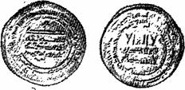
Рис. 19. Дирхем Арабского Халифата, чеканенный в г. Шаше
Свидетельством начавшейся разработки карамазар-ских серебро-свинцовых месторождений являются серебряные арабские монеты — дирхемы, чеканенные в правление халифа Харун-ар — Рашида от имени его младшего сына Мамуна в 189 — 190 гг. мусульманского летоисчисления (804— 806 гг.) непосредственно на месторождении (или руднике) Шаша.
На лицевой стороне этих дирхемов в середине вычеканено: «Нет бога, кроме Аллаха; он един и нет у него товарищей», а по кругу «Во имя Аллаха чеканен этот дирхем в руднике Шаша в году сто восемьдесят девятом» (или сто девяностом). На обратной стороне, в середине: «Али-Мухамед посол Аллаха, сын эмира правоверных, наследник престола мусульман, Наср», по кругу: «Мухамед посол Аллаха, который послал его с руководством и верою истинною, чтобы возвеличить ее над всеми религиями, несмотря на сопротивление мно-гобожников».
Клады дирхемов, чеканенных в самом г. Шаше (рис. 19), найденные даже в Финляндии, Дании, Армении, позволяют судить о размерах добычи серебра на Шашском руднике. Правительство Абдаллаха ибн Та-хира (826 — 828 гг. н. э.) считало месторождение Шаша особо важным объектом, дававшим казне 607 100 дирхемов в год.
Восточные средневековые авторы упоминают «серебряный рудник Шаша» и рудник Кухи сим (Гора серебра) в составе Илака. Современные исследователи «серебряным рудником Шаша» считают или Лашкерек (Ю. Ф. Буряков), или Канимансурскую группу месторождений (М. Е. Массой), или Канджол (М. Е. Массой, Б. Н. Наследов).
Лашкерек. Разработка Лашкерекского месторождения началась в VII — VIII вв., наиболее интенсивно рудник действовал в VIII — IX вв. Выработки здесь приурочены к зоне оруденения и разломов протяжением 4 — 5 км. В этой зоне с наибольшей интенсивностью оруденения выделяется участок в 1, 2 км длиной при мощности до 15 м. Объем выработанной породы составляет более 300 тыс. кубических метров выработки достигают 300 м в глубину. Руда содержит от 100 до 14 500 г/т серебра. По самым скромным подсчетам (при среднем содержании серебра 0,5 кг/т), в средних веках здесь добыто более 400 т серебра.
По отвалам и выработкам можно установить, что в X в. разработка рудника приостанавливалась. Устья некоторых выработок были замурованы и замаскированы. В XI — XII вв. разработки возобновились, но в меньших масштабах. Перерыв связывают с политическими событиями, приведшими к гибели саманидского государства. С 996 г. бассейн Сырдарьи перешел к феодальной династии Караханидов, в XII в. — к Каракитаям, а затем к хорезмскому шаху. В 1220 г. район заняли татаро-монголы.
Канимансур. Древний рудник Канимансур расположен в районе поселка Адрасман. Рудное поле месторождения сложено вулканическими породами, образующими северо-западное крыло Алмалысайской антиклинали. Крыло складки вблизи оси разорвано тектоническим нарушением, называемым Главным разломом, который является основной рудовмещающей структурой месторождения. Разлом представляет собой зону раздробленных пород мощностью 50 м. Интрузивные породы рудного поля прослеживаются в виде даек фельзит-порфиров, кварцевых порфиров, диабазовых порфиритов. Все рудные тела здесь залегают в зонах тектонических нарушений в форме жил, невыдержанных по мощности, с частыми раздувами и пережимами. Не — редко здесь распространены столбообразные и линзообразные рудные тела.
Крупнейшими древними выработками месторождения являются «Главные камеры» и «Большой карьер». «Главные камеры» представляют систему пещер, которые образовались после обрушения предохранительных целиков. Общий размер поля камерных работ составляет в длину до 125 м, в ширину до 75 м и в высоту до 50 м; длина самой большой камеры 60 м, ширина 50 м. В настоящее время она обрушена. «Большой карьер» имеет форму щели, протягивающейся до 350 м в длину при ширине от 5 до 60 м и глубине (до завала) 50 м. В южном борту видны ячейки древних забоев, горизонтальные ходы и колодцы. В районе Канимансурского рудного поля известно несколько сот более мелких выработок, представленных шурфами, канавами и штольнями.
Основными полезными компонентами в рудах месторождения Канимансур являются свинец, серебро, цинк, плавиковый шпат, а сопутствующие — медь, висмут, молибден, вольфрам, кобальт, золото. Минералогически руды представлены мелкими зернами свинцового блеска (до 5 — 10%), реже сфалеритом (до 3%), очень редко халькопиритом, арсенопиритом и пиритом. В свинцовом блеске присутствуют вкрапления аргентита и тетраэдрита. Из вторичных минералов встречаются также церуссит, лимонит и очень редко ковеллин. По-видимому, в Канимансуре добывались вторично обогащенные серебром и частью окисленные вкрапленные сульфидные руды.
Довольно крупным рудником был Джеркамар. О крупных масштабах оруденения свидетельствуют 150 древних выработок. Отдельные горные выработки рудника имеют вид карьеров размерами 8X20 м. В 1948 — 1949 гг. автор участвовал в ревизионных работах на этом месторождении. При проходке ствола шахты древние камерные выработки были встречены на глубине около 50 м. Установлено, что Джеркамарское месторождение в пределах зоны окисления почти полностью отработано. Можно с уверенностью предполагать, что древние рудокопы выбирали здесь богатую серебряно-свинцовую руду. Это был своеобразный филиал древнего Канимансура.
В горах Акчечеглитау, в 3 км от перевала Кушайнак, на водоразделе Джелтимас-сая и Джусалы — сая в 10 км от Адрасмана расположено Джелтимасское месторождение. Разрабатывалось оно системой щелеобразных выработок, пройденных по почти вертикальным кварцевым прожилкам, содержащим халькопирит, железный блеск, малахит и лимонит. Отдельные выработки доcтигают длины 100 м при ширине от 0,5 до 10 м и глубине 30 м до завала. В древности руды эксплуатирова — лись здесь главным образом ради серебра. Под руководством автора здесь была пройдена 80-метровая шахта с рассечками на двух горизонтах, которая показала, что уже на первом горизонте система кварцевых прожилков выклинивается в тонкий почти безрудный провод-ничок.
Канджол (Тропа рудников). Канджольское месторождение расположено в Карамазарском горно — рудном районе, вблизи г. Табошара. Главная рудоконт-ролирующая структура рудного поля — Канджольский разлом, прослеживается в пределах рудного поля на 12 км. Рудоносные жилы, идущие вдоль всего разлома, имеют простирание, близкое к меридиональному.
Серебряное и полиметаллическое оруденение представлено жилами и прожилками сульфидов и реже вкрапленными сульфидными рудами. Основные рудные минералы: галенит, сфалерит, халькопирит, пирит и серебросодержащие пираргирит, фрейбергит и аргентит.
Химический анализ большого количества проб из рудоносных жил месторождения показал следующие средние содержания: свинца 3, 82%, цинка 0,96%, меди 0,5%, висмута 0,02%, кадмия 0,06%.
На всем протяжении Канджольского разлома прослеживается непрерывная полоса древних выработок, общее число которых достигает 2 500,а глубина отработки месторождения подземными выработками составляет 200 м.
Установлено, что на древнем руднике Канимансур отсутствуют шлаки. В то же время огромное поле шлаков отмечено в 2 км севернее Канджола. Здесь обнаружены развалины древних печей и строений, магнетито-вая руда и каменные орудия. Найдены также кувалды и молотки из железа. В. М. Турлычкин предполагает, что знаменитый Кухисим объединял рудники Канимансур и Канджол с расположением монетного двора в Канджоле, на котором и чеканились дирхемы Шаша.
Шельджа. В трудах восточных ученых x в. областью Шельджа называется Таласский Алатау.
Шельджа конкурировала в добыче серебра с Ила-ком. Подтверждением развитого горного промысла являются бесчисленные горные выработки, находки плавильных печей и шлаков. На отдельных месторождениях (Джолсай, Чаткарагай, Сарымсак и др.) цепочки древних выработок протянулись на несколько километров, вскрывая жилы и жильные зоны мощностью от 0,1 до 1, 2 м, длиной от 50 до 300 м. Рудокопы добывали самородное серебро, серебросодержащий галенит и блеклые руды, сульфиды и сульфосоли серебра, а также другие минералы. Содержание серебра с поверхности составляло 300 — 500 г/т, изредка 1 кг/т. А. Я. Коледа, сообщивший эти сведения, считает наиболее интересным Ку-мыштагский рудный узел, названный, однако, по наименованию речки Кумыштаг[12] — Серебряная гора, а не горы. Серебряной горой он считает гору Учимчек, в районе которой находится особенно много горных выработок.
В. И. Смирнов установил, что древние рудокопы Шельджи проводили работы по освоению недр Таласского Алатау (а также Киргизского хребта) методично и с явным пониманием условий залегания рудных тел, , в большинстве случаев «слепых». Он выделяет четыре типа древних выработок: штольнеобразные (имеющие извилистое направление как в горизонтальной, так и в вертикальной плоскостях); шурфообразные, пройденные чаще наклонно по падению жилы; щелевидные по простиранию жилы длиною до 10 м; карьеры на крупных рудных телах в раздувах жил или мощных жильных зонах.
По мнению М. Д. Бубновой, древние рудокопы выбрали лишь менее крепкие руды. В твердых горных породах пробиты только подходные выработки к зонам окисления или раздувам жил. Применялся огневой способ проходки, есть следы водоотливных канавок, встречены остатки деревянной крепи, руда обогащалась дроблением и промывкой. К концу XII в. большинство выра — боток было заброшено.
Памятниками добычи серебра в Таласском Алатау являются чеканенные в г. Таразе серебряные дирхемы (рис. 20), которые до 1021 г. были высокопробными, а к концу XI в. содержание в них серебра упало до 34%.
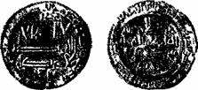
Рис. 20. Дирхем, чеканенный в г. Таразе
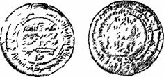
Рис. 21. Дирхем, чеканенный в Закавказье
Закавказье. В VIII — XI вв. чеканка дирхемов имела место и в Закавказье (рис. 21). Сырьем для них служило серебро, добываемое из известных и сейчас свинцово-цинковых месторождений. Это Гюмушханское месторождение в Армянской ССР, эксплуатировавшееся с перерывами с времен расцвета Древней Греции. Гюмушлугское месторождение в Азербайджанской ССР также известно с древнейших времен. Арабы осуществляли здесь добычу серебра в VIII — IX вв., о чем есть упоминания в арабской литературе. Месторождение протягивается в северо-западном направлении, оруденение локализовано в пачке сланцевых известняков в более чем двадцати жилах.
Дирхемы на РусиВ X в., т. е. в период максимального распространения куфических дирхемов в русских землях, началась и продолжалась в XI в. чеканка первых русских серебряных монет — «сребреников» Владимира I (рис. 22), Свято-полка и Ярослава, представляющих собой сейчас исключитальную редкость. По массе они соответствовали нормам дирхемов. Однако в экономическом отношении для выпуска этих монет необходимой базы не было, и денежное обращение на них построить не удалось.
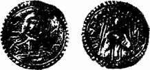
Рис. 22. Сребренник Владимира.
До наших дней дошло много памятников письменности, в которых приведены древнерусские названия арабских дирхемов — куна и ногата, а также древнейшее обозначение денег — скот. Например, князь Владимир повелел раздать бедным «от скотниц кунами». Ярослав в 1018 г. «начаша скот сбирати от мужа по 4 куны, а от старост по 10 гривен и от бояр по 18 гривен, и приведо-ша варяги и вдаша им скот по гривне на щит серебра».
Название «скот» было полностью вытеснено названием куны, надолго закрепившимся в славянских языках в общем значении деньги. Типичной куной — монетой являлся куфический дирхем, имеющий массу 2, 7 г Название монеты ногата произошло уже от арабского слова «нагд», что означает хорошая, отборная монета. Возникновение этого названия связано с необходимостью выделять дирхемы более позднего чекана, отличающиеся несколько большей массой (3, 4 г).
Страны ЕвропыПосле падения в 476 г. Римской империи на ее территории в Западной Европе возникали и распадались многие государственные образования. К началу IX в. они объединились в крупнейшее государство — империю Карла Великого. О ее территориальных размерах можно судить по тому, как она была снова разделена в 843 г. между тремя внуками императора. Карлу Лысому досталось Западнофранкское королевство, охватывавшее большую часть современной Франции. Земли к востоку от Рейна (ядро будущей Германии) были отданы Людовику Немецкому, промежуточная полоса земель, протягивающаяся от Северного моря в Италию, осталась у старшего внука Лотаря, ставшего императором.
Из современной политической карты Европы видно, что государство Лотаря распалось на княжества, из которых позднее возникли Нидерланды, Бельгия, Люксембург, Швейцария, Италия. Часть земель отошла к Франции, часть к Германии. Но и Германия после раздела 843 г. более 1000 лет не была единым государством, а состояла из многих княжеств, герцогств, графств и других «имперских чинов». Правивший в качестве императора после Людовика Немецкого в течение немногим более года (876 — 877 гг.) Карл Лысый начал процесс превращения графов из председателей судов и военных командиров в господ и властителей своих округов. Генрих Птицелов (919 — 936) создал новую конницу, заимствуя способ ведения боя у венгров, что явилось исходным пунктом позднейшего рыцарства. Оттон I (936 — 973) провозглашает Германию «Священной Римской империей германской нации», и в 962 г. папа в Риме «помазал» его римским императором.
К середине XII в. главными землями Германии были герцогства Франкония, Саксония, Швабия, Бавария и Австрия. В июле 1235 г. появилось герцогство Браунш-вейг — Люнебург. В середине XII в возникла коллегия курфюрстов для выбора германского императора, в которую вошли архиепископы Майнцский, Трирский и Кельнский, герцог Саксонский, маркграф Бранденбург-ский, князь (позднее король) Чешский, граф Пфальц-ский (что в 1356 г. было подтверждено Золотой буллой). В 1273 г. императором был избран граф Рудольф Габсбург. С 1438 г. императорами «Священной Римской им — перии» избирались только Габсбурги. В государствах этой империи были открыты и стали разрабатываться месторождения серебра. Появились новые типы серебряных монет.
Западноевропейские денарии. У К. Маркса имеется следующая характеристика перехода средневековой Европы на новые монеты — западноевропейские денарии:
«При платежах серебром господствовал обычай взвешивать металл, по большей части на марки, при всех более или менее крупных платежах… Чеканное серебро также взвешивалось при таких платежах, так как монеты состояли из совершенно чистого серебра и, следовательно, все дело было в весе. Поэтому названия фунт (ливр, лира) и марка отчасти обозначали воображаемые или счетные монеты, отчасти перешли на реальные серебряные монеты. Серебряные монеты: денарии или крейцеры… В Германии эти денарии назывались пфеннигами (пенниг, пеннинг, фенниг)… Еще одно наименование денария, начиная с начала XII века, в Германии, Нидерландах и Англии в связи с звездой[13] изображенной на нем вместо креста: стернлинги, стерлинги, старлинги… По мере распространения мелкого ремесла все больше торговых городов и мелких князей приобретали право чеканить свои местные монеты…»[14].
После распада Арабского Халифата прекратился приток на Русь арабских монет. На смену им в XI и начале XII в. стали поступать западноевропейские денарии. Вначале денарии в кладах встречаются с дирхемами Арабского Халифата, затем быстро их вытесняют.
Изображения на денариях очень разнообразны: люди, кресты, звезды, здания, различные предметы, буквенные монограммы и т. д. Имеются латинские надписи — имена правителей, а иногда монетчика или чиновника монетного двора. Монета весила сначала около 1, 02 г, ее диаметр был равен примерно 1, 5 см (рис. 23).
Гослар и Брауншвейг-Люнебург. К. Маркс в четырех тетрадях «Хронологических выписок», относящихся к периоду с 91 г. до н. э. по 1648 г. и прослеживающих, как правило, только политическую историю, делает заметное исключение для такой отрасли экономики, как горная промышленность, и нередко вносит в тетради материалы о ней. Это свидетельствует о том, что горному делу К. Маркс придавал первостепенное значение.
Чаще других К. Маркс упоминает в тетрадях о Гарц-ском рудном районе и о имперском вольном городе Госларе, владевшем Раммельсбергскими рудниками, являвшимися в средние века крупнейшим поставщиком серебра, в связи с чем Гослар в то время играл значительную роль в экономической и политической жизни Германии и неоднократно был объектом захватнических войн со стороны Брауншвейг-Люнебурга.
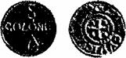
Рис. 23. Денарий, чеканенный в Кёльне.
Первая запись К. Маркса на эту тему относится к самому началу нашего тысячелетия — 1002 г.:
«Оттон III умер в замке Романьи 22 лет от роду… У Оттона нет наследников. При Оттонах открытие серебряных рудников Гарца…»[15] .
Эта выписка важна тем, что определяет период открытия серебряных рудников временем от 962 г. (начало царствования императора Оттона I) до 1002 г.
Город Гослар, основанный в 920 г. на р. Гозе у подножия горы, называемой сейчас Раммельсбергом, был сначала знаменит как любимое место пребывания императоров главным образом во время охоты. Своим же последующим быстрым ростом и процветанием город был обязан горнозаводской промышленности, развившейся на принадлежащих ему землях.
В начале раммельсбергское серебро императоры перечеканивали в новые денарии в Кельне. На этих монетах выбивалось данное этому городу римлянами название COLONIA. (см. рис. 23).
Император Генрих III (1039 — 1056 гг.) устроил в Госларе в 1050 г. одну из своих резиденций, а перед этим в 1047 г. основал там приют Симона и Иуды, которые были изображены на первом денарии, отчеканенном в Госларе на новом монетном дворе (рис. 24, а).
Открытие приюта Симона и Иуды связано с любопытными событиями, о которых пишет К.
Маркс: «В 1046 г. Генрих III с сильным войском отправляется в Италию, чтобы устроить дела папского престола. За последний боролись уже много лет две партии римской знати и трое пап. Генрих собрал в Сутри церковный собор, и все трое пап были объявлены незаконными. Затем Генрих отправился в Рим, заставил признать немецкого епископа Свидгера Бамбергского папой Климентом II, велел ему короновать себя императором. Летом 1047 г. Генрих возвратился в Германию»[16]. Коронация императора и была отмечена выпуском денария с изображением Симона и Иуды.
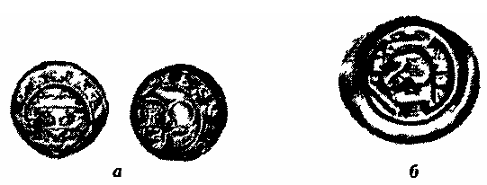
Рис. 24. Монеты, чеканенные из серебра Гарца:
а — денарий;
б — брактеат.
Территория Гарцских гор тогда принадлежала герцогству Саксонскому. С 1142 г. герцогом Саксонии, а с 1156 г. и герцогом Баварии стал Генрих Лев. К — Маркс в выписке, относящейся к марту 1168 г., писал: «Генрих Лев был вероломным и хищным неряхой», он не ладил с императором Фридрихом Барбароссой («Рыжебородым»). Так, в 1173 г. Генрих Лев «не желает участвовать в итальянском карательном походе, .. расширяет свои владения, занимается горным делом в Гарце, хо — чет, чтобы овладеть всем Гарцем, взять Гослар…». Пятилетние войны не принесли успеха Генриху Льву, «…город Гослар остался свободным городом с увеличенными владениями». Император в 1180 г. отобрал у Генриха Льва герцогства Саксонию и Баварию, а сам Генрих был «изгнан на три года из империи; зато Бородатый обеспечил ему все наследственные родовые вла— дения, из которых позднее возникло герцогство Брауншвейг»[17].
Таким образом, г. Гослар на этот раз остался хозяином Раммельсбергских рудников. История открытия этого месторождения очень интересна. Г. Агрикола в 1546 г. писал: «Вот что говорят о возникновении рудника Гослар: один дворянин — его имя не упоминается — привязал свою лошадь Раммель на горе, лошадь била копытами и разбрасывала землю; таким образом она раскопала скрытую свинцовую жилу, как в свое время конь Пегас, о котором писали поэты, открыл родник, названный его именем. Так и эту гору назвали Раммельсберг. Но тот родник давно бы засох, если бы он не собирал воду, которую лили поэты. А гора до сих пор существует и месторождение свинца продолжает разрабатываться…».
Более подробно эту же историю передает М. В. Ломоносов, причем имя Раммеля здесь носит не конь, а его хозяин: «Таким ненарочным приключением сыскано богатое Раммельсбергское горное место в Германии во время немецкого императора Оттона Первого. Сей государь, будучи в Гарцскихгорах, забавлялся немалое время охотою и некогда послал своего охотника, называемого Раммеля, в тамошний лес для ловли диких зверей, за которыми он, гнавшись до горы, где ныне рудники учреждены в великом множестве, не мог за дичью ради трудности на коне следовать, для того, привязав его к дереву, за зверьми пеш погнался. А когда к коню назад возвратился, то увидел, что он, господина своего с нетерпением ожидая, землю копытами разрыл и из ней выбил некоторые тяжелые и светлые камни Сии камни взяв, Раммель привез и показал самому императору, который, через пробование удостоверившись, что они металл в себе содержат, велел учредить заводы на том месте. Оная гора и поныне именем помяную-го егеря Раммельсберг называется».
М. В. Ломоносов указал достаточно точную дату открытия месторождения — конкретно при императоре Оттоне I, т. е в 962 — 973 гг., свидетельствующую, что это открытие имело место более десяти столетий тому назад. Агрикола подчеркнул, что в его время, т. е по крайней мере через 570 лет после открытия, месторождение продолжало разрабатываться. В 1763 г., как указывает М. В. Ломоносов, там имелись рудники «в великом множестве».
Рис. 25. Слиток из серебра Гарца (2/3 натур, вел.).
В Верхнем Гарце на землях будущего герцогства Брауншвейг-Люнебург были открыты месторождения серебра Вильдеман — около 1000 г., Целлерфельд — около 1150 г., а позднее Клаусталь, Лаутенталь и др.
Как говорилось выше, Генрих Лев около 1173 г. занимался горным делом в Гарце, и хотя Гослар с Рам-мельсбергскими рудниками он захватить не смог, Вильдеман и Целлерфельд были в его руках, и из серебра этих месторождений он чеканил монеты.
В это время в Европе появились монеты нового типа — брактеаты, которые чеканились на очень тонком кружке с изображением лишь на одной стороне. На рис. 24, б показан брактеат Генриха Льва со «львом в городе». Масса монеты 0,78 г.
В 1382 г. для обеспечения крупных платежей города Гослар, Брауншвейг, Гильдесгейм, Гальберштадт и др., тяготеющие к Гарцу в географическом отношении, установили обращение крупных круглых слитков серебра, весивших 15 лот — около 190 г. Каждый город помечал такие слитки знаком своего ответственного чиновника и короной — знаком союза городов. На рис. 25 — слиток г. Гальберштадта (знак чиновника — «волчья петля»).
Майсен. Называя вторичное самородное серебро» «эфемерным источником серебряных руд», В. И. Вер-надский приводит пример Фрейберга: «Даже в таких месторождениях, как Фрейберг, где самородное серебро заведомо не раз в многовековой истории этих рудников являлось рудой, оно дало наименьшую часть всего добытого здесь серебра». В сноске к этим словам приводятся следующие данные: «Во Фрейбергском районе, на 55 кв. км с 1163 по 1896 г. добыто серебра 5242 т 957 кг, из них наименьшая часть получена из самородного. По Готтшальку, с 1163 по 1523 г. добыто здесь 1958 т 800 кг серебра… В этой более древней добыче значение самородного серебра больше».
Следует отметить, что Готтшальк, на которого ссы-дается В. И. Вернадский, не точно назвал дату открытия Фрейбергского месторождения, которое, по данным Фрейбергской горной академии, имело место в 1168 г. Событие это показано Г. Агриколой в труде, написанном в 1546 г., Г. Агрикола сообщает: «Наиболее знаменитые рудники расположены в Майсене. Самый старый Фрейбергский рудник. Его запасы неисчерпаемы. Особенно богата серебром часть рудника, называемая „Пожар“. Дату открытия Г. Агрикола „округлил“ на два года: „380 лет назад, когда в Майсене правил князь, или, как его теперь называют, маркграф Отто, были обнаружены фрейбергские серебряные жили“.
Открытие месторождения, по словам Г. Агриколы, произошло при следующих обстоятельствах:
«В результате счастливой случайности в Майсене было найдено серебро. На р. Заале, которая была хорошо известна Страбону, расположен Галле, сначала деревня, а теперь большой город. Еще во времена Римской империи он был известен своими соляными источниками… Люди, которые возили соль через Майсен в Богемию в повозках, запряженных четверкой лошадей, обнаружили на колесах кусочки свинцового блеска. Они взяли его с собой в Гослар. Те же люди возили из этого города сви — нец. Так как из галенита серебра было выплавлено на много больше, чем из госларского, то многие горняки отправились в Майсен, где сейчас расположен известный и богатый город Фрейберг».
Возчикам соли, о которых пишет Г. Агрикола, хотя и очень повезло, но не в максимальной степени, так как к колесам повозок могли бы прилипнуть и кусочки самородного серебра, ибо, как отмечает В. И. Вернадский: «Во Фрейберге в Саксонии в первое время, в средние века, работали руду дудками на поверхности и находили самородное серебро в тесной смеси с роговым серебром». Этот способ добычи он относит к 1170 — 1287 гг.
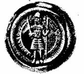
Рис. 26. Брактеат из серебра Фрейберга.
Чеканка брактеатов распространилась также и в Майсенском маркграфстве. Стиль эпохи расцвета этих монет виден на брактеатах Отто Богатого (рис. 26), который обязан своим прозвищем серебряным рудникам Фрейберга. На брактеате кольцевая надпись «ОТТО Mar-c-hio de Lippzina» (последнее слово Лейпциг — место чеканки). Маркграф изображен в шлеме и кольчуге со знаменем и мечом. Масса монеты 0,95 г.
Гессен. В. И. Вернадский указывает:
«В большем или меньшем количестве самородное серебро будет встречено в верхних частях, вблизи земной поверхности, во всех месторождениях серебряных минералов, как в жильных, так и в осадочных». Отметив, что в осадочных месторождениях «серебро переносится в растворах, в связи с органическими веществами, далеко от мест нахождения своих первичных соединений», В. И. Вернадский приводит в качестве примера Франкенбергское ме — сторождение: «Особенно резко такая циркуляция серебра наблюдается в осадочных месторождениях: здесь оно иногда составляет цемент песчаников… в Гессене, во Франкенберге в цехштейне оно сосредоточивается в кусочках дерева, являясь для них окаменяющим веществом».
М. В. Ломоносов в числе месторождений, «которые состоят из песчаного или известного камня, также из шифера, горного уголья и окаменелого дерева и руды разных металлов в себе скрывают», также упоминает это месторождение:
«В Германии славен пред другими в Гессенском ландграфстве Франкенберг, который медь и серебро в себе содержит. Там случилось мне не без удивления видеть не токмо дерево, но и целые снопы окаменелые, медную и серебряную руду содержащие, так что в некоторых колосах зерна чистым серебром обросли».
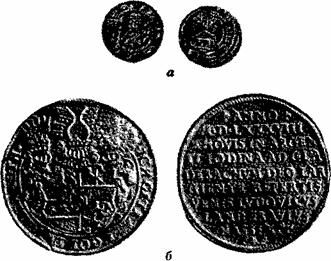
Рис. 27. Пфенниг из серебра Франкенберга (а), талер из серебра Гладебаха (б).
Параллельно с брактеатами в ряде германских государств, в том числе в Гессене, чеканились серебряные двусторонние пфенниги.
Так, София, жена герцога Брабантского, которую ошибочно называют гессенской ландграфиней, чеканила в г. Марбурге брактеаты, а в г. Франкенберге на Эде-ре двусторонние пфенниги. Чеканка производилась в городах, которые войска Софии в 1263 г. отняли у архиепископа Майнцского. На рис. 27, а чеканенный во Франкенберге пфенниг с портретом Софии, держащей знамя и книгу, вокруг портрета титул Sofia Ducus de В (rabant); на обороте — церковь, вокруг которой надпись Vrankenb (erg).
Новое германское княжество — ландграфство Гессен возникло следующим образом. В 1247 г. умер Генрих Распе — ландграф Тюрингии, в состав которой с 1137г. входила территория Гессена. С его смертью прекратилась мужская линия ландграфов, и, как пишет К. Маркс, «в Тюрингии всякий порядок полетел к черту… Майсенский маркграф Генрих Сиятельный, сын сестры Генриха Распе, захватил тогда Тюрингию; в то время дочь другой сестры Распе, София, жена герцога Брабантского, заняла для своего сына Генриха Дитяти лен Гессен» ]. Но мало того, София, как сказано выше, захватила несколько тюрингских городов, принадлежавших Майнцу.
Разработка Франкенбергского месторождения велась многие столетия, о чем свидетельствуют и нумизматические памятники. Так в 1776 г. была отчеканена серебряная медаль с видом г. Франкенберга и надписью «из руд Франкенберга». В том же 1776 г. после десятилетнего перерыва возобновилась чеканка гессенских серийных талеров, продолжавшаяся до 1779 г. Но об этом и более позднем времени данных в геологической литературе не встречено. Бесспорно, что в 1776 г. или накануне во Франкенберге была выявлена еще одна рудная залежь с самородным серебром.
Гессенское ландграфство делилось на несколько линий, одной из них был Гессен-Марбург. Ландграф Людвиг III отчеканил в 1587 г. первый из известных талеров с текстом, в 11 строках которого говорится, что он отчеканен из серебра, добытого в руднике Гладебах (рис. 27, б). Других данных об этом руднике не выявлено.
Чехия. Одной из областей развития месторождений серебросодержащих свинцово-цинковых руд являются прилегающие к Средне-Чешскому гранитному массиву районы Чехии. Крупнейшее из месторождений этой области — Пршибрамское (жильное, типа выполнения трещин), серебро которого поступало в Киевскую Русь Первым памятником письменности об источниках этого серебра были зафиксированные в летописи слова киевского князя Святослава Игоревича, сказанные им тысячу лет назад, около 971 г., матери своей Ольге перед вторым походом на Дунай: «Не любо ми есть в Киеве быти, хочу жити в Переяславци на Дунай, яко то есть середа в земли моей, яко ту вся благая сходятся: от Грек злато, паволоки, вина, овощеве разнолич-ныя, из Чех же, из Угор серебро и комони, из Руси же скора и воск, мед и челядь». Этот поход Святослава на Дунай был неудачным.
Прилегающие к Руси государства Восточной Европы во второй половине X в. переживали период консолидации, разложения родового строя и феодализации общества. Князь Болеслав II (963 — 999 гг.) объединил к концу X в. всю Чехию под своей властью. Венгры, кочевые скотоводы, пришедшие в конце IX — начале X в. из Приуралья, расселились к середине X в. по Тиссо-Дунайской равнине на завоеванных у славян землях и перешли к оседлому земледелию, образовав в 1000 г. Венгерское королевство во главе со Стефаном I (970 — 1038 гг.). В X в. быстро росло Болгарское славянское государство, глава которого Симеон (893 — 927 гг.) называл себя «царем болгар и самодержцем ромеев».
Святослав, используя предложения Византии, стремившейся ослабить своих соседей Русь и Болгарию, столкнув их друг с другом, вторгся в 967 г. в Болгарию и обосновался в устье Дуная, в Переяславце. Но византийцы, чтобы воспрепятствовать утверждению русских в Болгарии, подослали к Киеву печенегов, в связи с чем Святослав был вынужден возвратиться на защиту столицы. Около 971 г., отбив печенегов, он снова пришел на Дунай. В союзе с болгарами и венграми Святослав начал воевать с Византией. После боя с численно превосходящими византийскими войсками у Силистры он вынужден был заключить с Византией мир. На обратном пути в Киев Святослав погиб у Днепровских порогов в бою с печенегами, которых предупредили византийцы.
В словах Святослава для темы данной книги наиболее интересным является упоминание о чешском и венгерском серебре, поступавшем на Русь главным образом в уплату за меха.
Только что обосновавшиеся по Дунайскому водному пути из Чехии к Переяславцу венгры еще не имели опыта добычи серебра. И хотя серебро, о котором говорил Святослав, частично шло и от венгров, оно могло быть только в виде чешской или иной западноевропейской монеты. Правда, на южных склонах Карпат ранее славяне производили добычу серебра, но после длительных войн она к 971 г. вряд ли была полностью восстановлена. Во всяком случае, в Венгрии собственные монеты стали чеканить лишь при Стефане I, т. е. после 1000 г. (рис. 28). Поэтому следует считать, что серебро (рис. 29), которое имел в виду Святослав, происходило в основном из рудников Чехии.
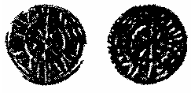
Рис 28. Денарий Венгрии.
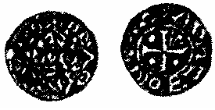
Рис 29. Денарий Чехии.
Пршибрам. В Горном журнале за 1853 г. со ссылкой на чешские хроники сообщается, что в Богемии, как называли Чехию по имени кельтского племени бойев[18], населявших территорию страны в древности, «еще в VIII столетии деятельно разрабатывали серебряные рудники; в 753 году начались работы в Пршибраме; а в 915 году, по Хагеку, было так много золота и серебра из рудников и заводов доставлено в столицу государей Богемских, что затруднялись найти употребления для этих металлов». В «Горном журнале» за 1886 г. приводятся другие данные: «Богатый серебряный рудник был открыт в 849 г. в Биркенберге, близ Пршибрама в Средней Богемии». О нем упоминается в документах за 1330 г.
Месторождения серебра в первые столетия истории Чехии и Моравии еще не разрабатывались систематически. Однако после быстрой отработки большинства золоторудных месторождений источником, заменившим их, стали серебряные руды, на предыдущем этапе добывавшиеся скорее лишь в исключительных случаях. С рубежа XII — XIII вв. серебро стало на весь средневековый период символом богатства чешского государства. В отношении XII в. это уже бесспорно относится к Пршибраму, но с середины XIII в. первенство перешло сперва к Йихлаве, а затем к Кутна-Горе.
Собственная рудная площадь Пршибрама ограничивается возвышенностью горы Биркенберг, на вершине которой расположен горнопромышленный городок. Отсюда к западу рудная область продолжается до Богури-на. Большинство жил имеет «железную шляпу» глубиной в среднем до 60 м, но иногда до 120 м и даже 270 м. Руды «железных шляп» и были главными объектами добычи в средние века.
Из серебра Пршибрамского месторождения (а также из серебра переживавшего свой расцвет рудника Шаша — Карамазара) при сыне Святослава Владими-ре( 988 — 1015 гг.) была отчеканена первая русская монета — «сребреник» с надписью «Владимир на столе, а се его серебро» (см. рис. 22). Акция эта имела политическое значение как провозглашение суверенности Руси и демонстрация достаточно развитых ее технических средств.
Иихлава. Другой областью распространения месторождений серебросодержащих свинцово — цинковых руд является Чешско-Моравская возвышенность, где расположены рудники Иихлава, Гавличкув-Брод, а также Кутна-Гора.
В Йихлаве серебро стали интенсивно добывать в 1234 г., а вскоре после этого и около Гавличкува — Бво-да (раньше он назывался Немецкий Брод, или Дойч-брод). Приходится говорить именно об интенсивной добыче, так как о начале разработки месторождения также существуют разные версии: эти рудники считают «древнейшими в Германии», указывают, что разработка их началась «около 1160 г.» и, наконец, — при короле Вацлаве I.
Расцвет добычи серебра до разработки Кутна-Горы был именно в Йихлаве, и здесь впервые в истории было разработано и утверждено «горное право» или «горное уложение», которое во всей Центральной Европе рассматривалось как образец правовых норм в горном деле. Согласно «горному праву», нашедший пригодную к плавке руду получал рудничное поле размером 9100 м2 и на нем обязан был заложить не менее трех шахт. Хозяин земли — король или князь — взимал с горняка одну десятую часть добычи полезных ископаемых.
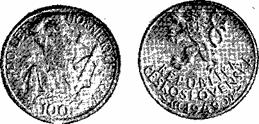
Рис. 30. 100-кроновая монета 1949 г.
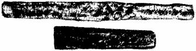
Рис. 31. Гривна и полугривна (2/3 натур, вел.).
В память 700-летия первого горного права в 1949 г. в ЧССР была отчеканена серебряная 100— кроновая монета (рис. 30).
Интересно, что горное дело возникло раньше, чем частная собственность на землю. Начиная с VII в. н.э. короли и герцоги жалуют своим вассалам — духовным и светским князьям право добычи металлов или соли на землях, принадлежащих князьям, а иногда на землях, не принадлежащих ни жалуемому лицу, ни королю, ни герцогу. Таким образом подземные богатства с тех пор стали считаться собственностью не землевладельцев, а верховной власти.
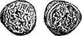
Рис. 32. Дирхем Золотой Орды.
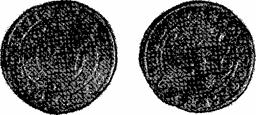
Рис. 33. Пражский грош Вацлава II.
Затем со временем появилась необходимость в горном праве, которое регулировало бы взаимоотношения между администрацией рудников, владельцами земли и владельцами недр.
Кутна-Гора. С XII в. регулярный приток серебра на Русь с запада в виде денариев сократился, а в XIII в., в связи с татаро-монгольским нашествием прекратился совсем. В XII — XIII и частично в XIV в. на Руси был так называемый «безмонетный» период. Серебро, поступавшее в Новгород, переплавлялось там в новгородские двухсотчетырехграммовые гривны-слитки (рис. 31), ставшие вскоре привычным средством крупных платежей.
Татаро-монгольские завоеватели принесли с собой серебряные монеты Золотой Орды (рис. 32) так называемые джучидские дирхемы, чеканившиеся из серебра, получаемого в виде русской дани.
Вскоре к западу и юго-западу от Москвы возникает обращение пражских грошей (рис. 33). Эти довольно крупные монеты сначала в 3, 7 г (60 штук из марки) при диаметре 2, 6 — 3, 1 см начал чеканить в 1300 г. чешский король Вацлав II, запретивший при этом обращение денариев и других мелких монет, а также разного рода слитков-гривен. Грош вскоре стал основной монетной единицей и получил распространение также в Германии, Польше, Литве, пока его в начале XVI в. не вытеснил талер.
Проведению этой реформы способствовало открытие в Чехии в конце XIII в. (около 1276 г.) новых богатейших месторождений серебра в районе Кутна-Горы, которые вместе с другими чешскими рудниками давали более 1/3 всего европейского серебра.
Кутна-Гора относится к типу серебросодержащих свинцово-цинковых жильных месторождений.
Находится, как и Иихлава, на Чешско-Моравской возвышенности.
Касаясь истории открытия этого месторождения, Г. Агрикола рассказывает, что один монах, имевший обыкновение гулять по лесу, нашел кусочек руды. Монах отметил это место, повесив свою рясу на дерево, вернулся домой и заявил о своем открытии. Новое месторождение, а затем рудник и город получили название Кутна-Гора, т. е. гора рясы.
Добыча серебра здесь уходит в далекое прошлое, но крупные разработки началась после 1280 г. Знаменита «серебряная лихорадка» XIII в., о которой сообщает хроника XIV в. В начале столетия почти 100 тыс. человек из Польши, Померании, Майсена и Словакии устремились в эту область. День и ночь на Кутна-Го-ре копали серебряную руду 60 тыс. человек. Росли поселки горняков. Король Вацлав II (1278 — 1305 гг.) начал строить город Кутна-Гора по строгому плану. В стены города была включена только часть поселков горняков. Привилегии свободного королевского города Кутна-Гора получила в 1308 г. от короля Генриха (1307 — 1310 гг.). В середине XIV в. в Кутна-Горе было около 10 тыс. жителей и она была вторым по величине городом после Праги, насчитывавшей 30 тыс. человек. В 1290 — 1350 гг. здесь ежегодно добывалось не менее 20 т чистого серебра. Всего в Кутна — Горе с 1290 по 1800 гг. добыто 2500 т чистого серебра, что составляет половину добычи во Фрейберге с 1168 по 1890 г.
Именно благодаря добыче здесь серебра в конце XIII в. Вацлав II значительно укрепил свою власть в феодальной Чехии и свое положение в «Священной Римской империи». Интересно, что в борьбе Вацлава II (Венцлава II) в 1301 — 1305 гг. с императором рудокопы Кутна-Горы (Куттенберга) принимали и непосредственное участие. Так, когда войска императора Альбре-хта подошли к Кутна-Горе «у Альбрехта все деньги вышли, его рыцари, служившие только за вознаграждение, разъезжаются по домам, а рудокопы из Куттен-берга отравляют ручей, протекавший у его лагеря; он вынужден вернуться с пустыми руками».
В этой войне рудники Кутна-Горы уцелели, но во время гуситских войн город и его население сильно пострадали. В ноябре 1421 г. император Сигизмунд, которого К. Маркс называет «прохвостом», явился с войском «…и был уверен, что окружил Жижку у Куттен-берга, но Жижка ночью прорвался через армию немцев». В январе 1422 г. немецкая армия отступила. «У Немецкого Брода ее настиг Жижка, разгромил, отнял знамена и обоз, рассеял и преследовал до Иглау — Си — гизмунд предал огню Куттенберг и перебил его жителей..».
Об этих событиях и месторождениях некоторые детали сообщает в 1546 г. Г. Агрикола. Касаясь одного из рудников Куттенберга — «Гота», он пишет: «30 лет назад разрабатывался один лишь этот рудник, так как во время войны люди покинули штольни остальных рудников. Далее идет Дойчброд; здесь на участке в 10 миль в сторону Куттенберга тянется старый рудник со множеством штолен; некоторые из них богемские рудокопы прорыли для маскировки, чтобы уберечь рудник от воровских действий горожан. Потом рудник перешел в руки императора Сигизмунда, начавшего войну против чехов-гуситов. Они хотели продолжить разработку рудника, когда окончится война. Но к разработке рудника никто не вернулся, так как многие были убиты или изгнаны».
На рубеже XV — XVI вв. в Кутногорском рудном районе местами работали на глубине до 500 м.
Впервые начали строить вертикальные шахты до рудничного двора, а ниже — по наклону жил. С 1473 г. стали использоваться шахтные вагонетки. Главной машиной на подъеме руды (и воды) стал конный привод, как правило, четырьмя парами лошадей. Наследственные штольни проводились через весь рудный район и сбивались с шахтными выработками. Сечение штолен бьь ло крупнее, чем у штреков, как правило, 236X88 см. Кутногорские рудничные карты первой половины XVI в. относились к лучшим в Европе.
Словакия. В средние века Словакия входила в состав Венгрии, главным монетным двором которой, действовавшим затем многие столетия, стал Кремницкий.
К. Маркс пишет. «Во время Карла-Роберта до сих пор мало используемые в Венгрии золотые и серебряные рудники становятся доходными. Эти „металлы“ текут в его казну тем больше, что он добился от магнатов закона: королю достается 1/3 золота и серебра, которое будет найдено в какой — либо области; Венгрия же стала страной, богатейшей благородными металлами, с тех пор как ее рудники разрабатываются переселившимися туда саксонцами и баварцами».
Первые упоминания о добыче золото-серебряной руды вблизи Банской Штявницы (по-немецки Шемницы, по-венгерски — Сельмецбанья) относятся к 1156г. Король Бела IV пригласил из Германии рудокопов и поселил их на территории, опустошенной татаро-монголами в 1241 — 1242 гг. Так возник горняцкий поселок Банска Быстрица (Нейсол) Вероятно, в этот период началась промывка золота в долине Кремницкого ручья. В 1328 г. король Карл-Роберт дал поселку Кремница привилегию свободного королевского города. Город вскоре занял второе место (после Буды) в Венгрии.
Известно, что в 1343 — 1344 г. в Кремнице добывалась 1 т золота и около 3 т серебра в год В этом городе был образован монетный двор, чеканивший с 17 мая 1327 г. венгерские гроши, подобные пражским, а с 1329 г. — золотые дукаты. С 1338 г. чеканятся серебряные денарии и оболы (по 6 и 12 штук в гроше). На рис. 34, а показан денарий короля Сигизмунда (1387 — 1437 гг.) со словацким крестом на одной из сторон. Позднее денарии чеканились с изображением мадонны (рис. 34, б) и буквами по ее сторонам KG и К — В (Кремница по-венгерски Кермежбанья). Эти буквы при Фердинанде I стали как знак Кремницкого монетного двора помещаться и на крупных серебряных монетах.
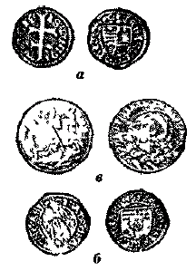
Рис. 34. Монеты из серебра Словакии (а, б, в).
Город Кремница имел право чеканки своей монеты — золотой и серебряной. На этих монетах (они чеканились без даты выпуска и даже без наименования города) на одной из сторон изображался св. Георг, а на другой парусный корабль (рис. 34, в).
Византия. На протяжении почти 1000 лет после падения Рима в восточной части бывшей Римской империи существовала Византийская империя, которая неоднократно и значительно меняла границы своей территории. Добыча серебра кроме того производилась византийца-ми, в частности, в рудном районе Капаоник Хотя горное дело в этом районе было начато еще древними римлянами (о чем свидетельствуют найденные здесь фигуры из свинца), более широкого развития оно достигло в средние века. Впервые этот рудный район упоминается в 1309 г., а максимальная добыча отмечается в XV в В отдельных месторождениях района содержание серебра достигает 2500 г/т, золота 20 г/т, свинца 2, 5% и цинка 0,5%.
Чеканка монет в Византии (рис. 35) была централизованной, в связи с чем не представляется возможным установить происхождение серебра для данной монеты.
Средневековые русские деньгиВ книгу «К критике политической экономии» К. Маркс включил краткое изложение истории русских денег. «Россия представляет поразительный пример естественного возникновения знака стоимости. В те времена, когда деньгами там служили шкуры и меха, противоречие между этим неустойчивым и неудобным материалом и его функцией в качестве средства обращения породило обычай заменять его маленькими кусочками штемпелеванной кожи, которые таким образом превращались в ассигнации, подлежащие оплате шкурами и ме-хами. Впоследствии эти кусочки кожи превратились под названием копеек в простые знаки долей серебряного рубля и в некоторых местах удержались в этой роли до 1700 г., когда Петр Великий приказал обменять их на мелкие медные монеты, выпущенные государством».
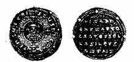
Рис. 35. Милпарисий Иоанна I Цимисцея.
Имеются интересные выписки К — Маркса по истории России от времени Рюрика до Михаила Романова и в том числе о древнейших русских монетах.
В выписке, относящейся к 1320 и 1321 гг., говорится: «1320 Юрий Московский стал готовиться к войне с Тверью… Дмитрий сделал миролюбивые предложения и купил мир, уплатив 1321 2000 рублей[19]».
В этой выписке исключительный интерес представляют слова, взятые К. Марксом в квадратные скобки, ибо считается, что действительно первое упоминание о рубле в письменных источниках встречено в тверской летописи этого времени.
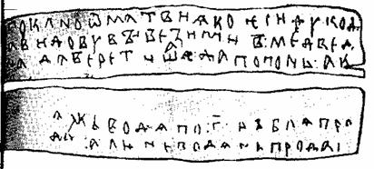
Рис. 36. Новгородская берестяная грамота.
Сейчас установлено, что древним рублем является слиток в два раза больший, а слиток длиной около 3 дюймов — это полтина — половина рублевого. На отдельных более поздних экземплярах рублей и полтин имеются произвольные клейма и надписи, но они носят частный характер, подтверждающий лишь принадлежность данного слитка тому или иному владельцу или иногда указывают место выплавки слитка (см. рис. 31).
Необходимо заметить, что после того как К. Маркс сделал вышеприведенную выписку, существенно более ранних указаний о рубле в официальных источниках обнаружено не было, если не считать, что в той же тверской летописи встречено упоминание, относящееся к 1316 г., которое в источниках, использованных К. Марксом, отсутствует. Но в 1952 г., при раскопках в Новгороде в слое, датируемом 1200 годом, найдена была берестяная грамота, в которой ясно читается слово «рубль», позволившая сейчас установить, что происхождение и слова и самого понятия «рубль» является несколько более древним (рис. 36).
Также с большей точностью К. Маркс фиксирует момент появления первой русской чеканенной «деньги». Под 1389 годом имеется такая выписка: «1389… При Дмитрии Донском все еще бывшие до тех пор в ходу кожаные деньги — куны были заменены маленькими серебряными монетами по образцу татарских. (Раньше на Руси деньгами служили меха ценных пушных зверей. Куна — шкура куницы; сюда относится также мех одного из видов белок. Вместо мелкой монеты считали на уши, половину ушей, лбы и морды куниц и белок) Монголы раньше пользовались маленькими кусками древесной коры или кожи с оттиснутым на них ханским клеймом, позднее монетами из серебра (танга) и меди (пула), откуда и русские стали называть свои серебряные монеты: деньги[20] (данги), а медные: пулы (пуло[21] или пул)»[22].
К. Маркс не указывает точной даты чеканки «деньги» (пишет «при Дмитрии Донском»), и это не удивительно, так как до сих пор она точно не установлена: некоторые исследователи считают 1360-е или 1370-е гг., другие связывают ее чеканку с победой Дмитрия Донского на Куликовом поле в 1380 г.
В середине цитаты в скобках К. Маркс кратко изложил суть учения о «меховых деньгах», которые имели распространение в отдельных историко-географических зонах Древней Руси, но, поскольку это явление было не всеобщим и этот вид денег не был единственным, для установления «курса валют» отдельным видам имеющих хождение на Руси зарубежных серебряных монет давались «меховые» названия куны, белы, лоб-цы, мордки т. п. Медные же монеты (пулы) появились несколько позднее.
Внимание К. Маркса к русскому денежному обращению свидетельствует о большом значении, которое он придавал истории развития и становлению именно русской денежной и монетной системы, раньше других построенной по десятичному принципу.
Западноевропейские денарии и гроши, наряду с оставшимися в обращении арабскими дирхемами и отлитыми из них слитками, послужили сырьем для чеканки новой русской монеты.
О времени возобновления чеканки русской серебряной монеты, которая стала называться «денга», письменных источников не имеется. Она началась в Москве в период между 1360 и 1385 гг. на базе новгородского рубля-слитка.
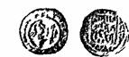
Рис. 37. Денга Дмитрия Донского.
Относительно массы первой московской денги (рис. 37) у специалистов также имеются разногласия. Одни утверждают, что первая московская денга чеканилась в количестве 216 штук из гривенки серебра. Другие полагают, что в Москве рублевая гривенка состояла с самого начала из 200 денег по 1, 02 г каждая (как денарий или куна последнего типа), но вскоре денга стала еще легче.
В середине 30-х гг. XV в. в Новгороде, а позднее в Москве и других городах началась «порча» монеты, в результате которой из рублевой гривенки серебра стали чеканить 225, 230 и т. д. до 500 и более монет. «Порча» монеты оказалась гибельной для рубля-слитка, так как 216 новгородских денег стали весить значительно меньше гривенки. Рубль остался только счетным понятием. «Порча» монеты в Новгороде была остановлена в результате народного восстания в 1447 г., и денга стала весить 0,79 г, а из гривенки чеканили «полтретья ста денег новгородских и десять», или 260 штук.
В Московском же княжестве дело обстояло значительно сложнее. Разразившаяся в середине XV в. феодальная война подорвала здесь денежную систему. Больше других в этом повинны мятежные галичские князья, которые в борьбе за великокняжеский престол захватили Москву и использовали выпуск денег для пополнения своей казны, снизив массу монет и, следовательно, рубля почти вдвое При Иване III в Москве Денга весила уже 0,36 г, в то время как в Новгороде — по-прежнему 0,79 г. К этому времени преобразования произошли и в счетной гривне Она уже давно перестала увязываться как-либо с массой и стала только своего рода практическим числовым понятием: в Новгороде она равнялась 14 денгам, а в Москве — 20 денгам.
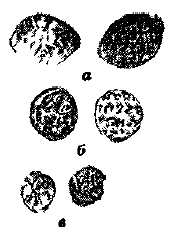
Рис. 38. Монеты Ивана Грозного:
а — копейка;
б — денга;
в — полушка.
В жалованной грамоте белозерского удельного князя Михаила Андреевича Кириллово —
Белозерскому монастырю от 5 февраля 1468 года говорится: «Дал есмь сию грамоту оброчную, что им даватидани в мою казну, от сбора до сбора, на год до десяти рублев пятигривен-ным серебром…».
О том, что это за пятигривенное серебро, сообщается в несколько более позднем документе — закладной на рыбную ловлю 1501 — 1502 гг.: «Се яз Окул Жук, княж Иванов слуга Семеновича, занял есьм у архимандрита у Воскресенского у Чернов-ского монастыря у Арсенья рубль денег московскими денгами ходячими по пяти гривен полтина…»
На основании этих документов в 1968 г. было отмечено 500-летие десятичного денежного счета в нашей стране.
Чтобы облегчить взаимные расчеты с Новгородом, Ивану III пришлось московскую ходячую денгу несколько подправить и сделать ее чуть меньше 0,4 г, и в Москве стали чеканиться денги ровно в два раза легче, чем в Новгороде. Это доказывается новгородскими писцовыми книгами 1490 г.: «А ключничи пошлины с тое обже на Рожество Христово денга новгородская, а на Велик день денга московская, а на Петров день денга московская, а все новые пошлины две денги новгородские». Появились, таким образом, монеты двух номиналов — московки и новгородки. В рубле, состоящем из 10 гривен, стало 200 денег московских или 100 новгородских. Впервые возник счет на 100 денег в рубле и появился стоденежный рубль.
Завершая борьбу с порчей монеты, русское правительство провело в 1534 г. денежно-монетную реформу, после которой для отличия «новгородок» от «московок» на первых стал изображаться всадник с копьем в руках, а на вторых — всадник с мечом. «Князь великий Иван Васильевич учини знамя на денгах, князь великий на коне, а имея копье в руке и оттоле прозваша денги копейныя». Изображение это и дало в дальнейшем наименование монете «копейка». «Мечевая» денга являлась уже полукопейкой, стала чеканиться также монета четверетца, или полушка, равная 1/4 копейки, т. е. была создана определенная денежно-монетная система (рис. 38).
В результате стоденежный счетный рубль превратился в стокопеечный, существующий и поныне, который стал родоначальником всех десятичных денежных систем мира.